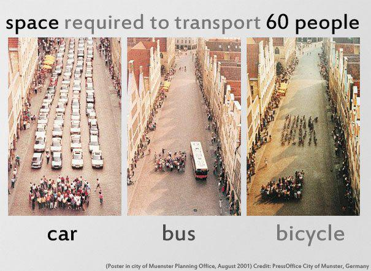

transportation
As a tourist or expat living in Vietnam you'll get used to hearing "xe om" (motorbike taxi) guys call for you - by yelling "You!" - at every street corner offering to take you places you probably don't want to go and otherwise offering you drugs and/or prostitutes. And if you're here alone while in Vietnam then it will often make sense (financially) for you to take a xe om instead of a regular tax. If you're with at least two other friends then it makes sense to take a regular taxi instead.
Most people in Vietnam nowadays have their own motorbike so they don't need to take a taxi, whether two- or four-wheeled, but when they do they - even they! - have to haggle with the xe om driver over the price.
How to get a sense of how much it costs to ride a xe om / motorbike taxi?
When trying to figure out a price for a motorbike taxi, keep in mind at least two things. The first is that it should cost about half as much as a regular taxi. The motorbike is not air conditioned and you don't have comfortable seats even though a xe om can slip through traffic quicker (OTOH a taxi will go faster on a clear straightaway). If a regular taxi cost around 12,000 VND/km then a motorbike taxi should be about half that or around 5000 or 6000 VND per kilometer. The glaring difference of course is that a taxi has a meter (if it doesn't, get out immediately!) so you know exactly how far you're traveling whereas the motor bike taxi does not have a meter so you have to kind of gas how far you're traveling and so does he.
Next, to know how much half of the taxi fare is, take a taxi first! You can take the same route by regular taxi once so you know how much that would cost and the halve it. Amazing.
Another thing to keep in mind is if you're a fat Westerner then you probably weigh three times as much as a normal Vietnamese person and even though xe oms don't charge by weight don't be surprised if they take this into account when calculating a price for your journey.
Tips
- Make sure the price is clearly agreed upon before you get on the bike. Otherwise there will be an argument when you reach the destination.
- Befriend a local driver near your house and get his mobile phone number (because they all have cell phones). And then anytime you need a trusty driver you can call him up and he will take you home. If you're too drunk to find your way home this can be helpful.
- Another thing to know ahead of time is that often people in Vietnam don't use maps. Instead they will ask around to get the general direction and then when they get closer they will ask again and eventually they will find the place. But they may get lost a few times on the way and hopefully it's not further than they thought in which case they'll bug you for more money. Not that it's your fault.
- Have Google Maps on your smartphone and show them exactly where you want to go because they won't understand your Vietnamese pronunciation of street names. They are much more likely to recognize the street name by seeing it written down rather than hearing you try to pronounce it. This applies to regular taxis as well though. One day we'll all have Androids and this will no longer be an issue.
- If you don't have a map you can also try writing down the name even without the accent marks (called diacritics). It's not your fault that Vietnamese is hard to pronounce at first. P.S. Learning Vietnamese, while difficult compared to learning Spanish, is definitely possible.
- As always when haggling on prices, be prepared to refuse and walk away. This means you should keep in mind the locations of a few other motor bike taxi drivers in case this one says no. So you might walk past the first one you see and not start bartering until the next one you see. Often times they won't agree to take your price until you turn your back to them. Practice showing people your back side a few times.
At the end of the day, though, a lot of xe om drivers outside the touristy areas are trying to earn a meek living and aren't just scheming to rip you off. Know what the approximate going rate is, be prepared to pay it, and don't get upset if he (and sometimes, though very rarely, she) tries to charge a 20% premium for having to make sense of the noises coming out of your mouth or to carry your bonus hundred pounds of weight. Just so long as you're not paying what it would cost to take a taxi.
And there's always the bus. For only 4000 VND you can cross the city in style.

- tomo's blog
- Login to post comments
- Comments
This is in response to a recent news article quoting an idiot Vietnamese-German "traffic expert" on a new traffic reduction proposal (read article).
Reducing traffic in Vietnam's big cities is as simple as this: limit private automobiles (cars), increase public transportation (busses and trains with grade separation). Focus on cars because:
- Cars disproportionately increase traffic problems.
- Compared to pedestrians, bicyclists, and motorbikes, they take up much more space per traveler.
- They are bulky and less maneuverable, so they force everyone else to stop, slow down, be blocked, and block others.
- Vietnam's roads are generally not wide enough for two cars to pass each other without causing traffic to slow down or stop.
- Many roads and alleys are hardly wide enough for a car yet they are allowed to use them while blocking all other traffic.
- Roads in Vietnam are constantly under construction which often means reduced width of lanes and more bottlenecks for cars.
- While both bikes and cars often stop in intersections after the light turns red, a car jamming an intersection causes a much bigger traffic jam, because unlike bikes it's much harder to go around them. So one car blocking an intersection means other cars who now have the right of way can't move.
- There is generally no parking for cars so they end up illegally parking on busy streets, reducing capacity, or they drive around idly increasing traffic.
- Cars and bikes often use each others lanes illegally, but blockage caused by a car in a bike lane is much more severe.
- Cars are a major culprit causing traffic jams wherever they are. The 500,000 cars in Saigon cause a lot of traffic congestion.
Clearly, taking one car off the road is more effective than many bikes for reducing traffic congestion. It's also a more equitable use of resources like land and fuel.
So-called traffic expert Nguyen Minh Dong says an odd-even license plate number scheme for keeping cars out of the city center every other day wouldn't work, mainly arguing about pollution and ignoring congestion. The problem at hand is congestion, and the corollary to his argument is that we should all buy cars in order to reduce pollution. Absurd.
Pollution would be better addressed by encouraging public transit, bicycles, walking, and affordable housing close to jobs.
But odd-even rationing has been tried many times before successfully. In nearby Guangzhou, an odd-even scheme kept 800,000 cars off the road over two months. While in other countries where cars are cheap it may make sense to buy a second car just to drive it on other days, cars are expensive here and incomes are much lower. It's ridiculous to assert that most would buy another car rather than use ways that almost all other Vietnamese take to travel, and it's ridiculous to say that an odd-even scheme would therefore not be effective.
The article argues that the "most important mission of transport police officers is to control traffic." I think that enforcing an odd-even scheme sounds a lot like controlling traffic. They then go on to argue that such a scheme "may cause" corruption. In Vietnam, enforcing any and all traffic rules causes corruption. Is that a reason to make it legal to run red lights?
There are many ways to reduce the number of cars. This reporter conveniently ignored all of them so I'll suggest a few.
- We should restrict cars from roads that are too narrow for them and use physical barriers to stop them from entering.
- We could make and keep roads one-way for cars but bidirectional for other traffic.
- We can add tolls around the core.
- We should add barriers to prevent cars from taking over bike lanes, while still making all lanes accessible to bikes.
- We should also be considering London's congestion charging (with free routes through the city to discourage long avoidance routes) or Singapore's electronic road pricing.
- We should NOT continue reducing fees for cars.
- We should NOT be misled into thinking that building more highways leads to less congestion. We should learn that lesson from the US.
And finally, we should NOT just sit around and do nothing. Market forces will mean increasing car ownership in Vietnam for an infrastructure that is overloaded by them as it is. I haven't even begun to address the taxi and busses impact on traffic! That will be a future post...
© 2010-2014 Saigonist.
Recent comments
1 year 11 weeks ago
2 years 3 days ago
2 years 1 week ago
2 years 3 weeks ago
2 years 19 weeks ago
2 years 19 weeks ago
2 years 19 weeks ago
2 years 19 weeks ago
2 years 19 weeks ago
2 years 19 weeks ago